Abstract
This project focuses on optimizing robotic grasping of spherical objects using the Alternating Direction Method of Multipliers (ADMM) in a simulated environment with the Franka Emika Panda robotic arm. The primary objective is to identify optimal antipodal grasp points on spherical objects, ensuring force closure and stable grasping within the gripper's constraints. The methodology integrates ADMM for grasp point selection, inverse kinematics for precise gripper positioning, and Proportional-Derivative (PD) control for smooth trajectory execution in the PyBullet simulation platform. A Finite State Machine (FSM) orchestrates the robot's movement through distinct phases: approach, grasp, transport, and release. Results demonstrate successful grasping with a grasp distance of 0.054 meters and a force closure dot product of 1.0, indicating robust stability. The simulation highlights the effectiveness of the proposed approach, with potential applications in automated pick-and-place systems. Future work aims to extend the methodology to non-spherical objects and real-world hardware implementations.
Table of Contents
Introduction
The rapid advancement of robotics in automation necessitates robust grasping techniques for objects of varying shapes and sizes. This project addresses the challenge of grasping spherical objects, chosen for their geometric simplicity, which serves as an ideal testbed for developing and validating grasping algorithms. The primary goal is to enable a robotic arm, specifically the Franka Emika Panda, to grasp spherical objects in a PyBullet simulation environment.
- ADMM for Grasp Point Selection: Utilizes the Alternating Direction Method of Multipliers to compute optimal antipodal grasp points on the sphere’s surface, ensuring they are within the gripper’s maximum width of 0.08 meters.
- Trajectory Control: Employs PD control and inverse kinematics to guide the robotic arm smoothly and precisely to the target grasp points.
- Force Closure: Ensures stable grasps by verifying that contact normals are nearly opposite, with a dot product of at least 0.8, corresponding to an angular deviation of ≤36.9°.
The project leverages PyBullet for collision detection and simulation, providing a controlled environment to test the algorithm’s efficacy. This work lays the foundation for scalable robotic manipulation tasks in industrial and domestic settings.
Literature Review / Related Work
Robotic grasping has been a focal point in robotics research, with significant contributions in grasp planning and control. Early work by Salisbury and Roth introduced the concept of force closure, emphasizing the need for stable grasps that resist external disturbances. Recent advancements have explored optimization-based methods for grasp planning:
- ADMM in Robotics: The Alternating Direction Method of Multipliers has been applied in optimization problems for robotic manipulation, as noted in Boyd et al. Its iterative approach is particularly effective for solving constrained optimization problems, such as finding antipodal grasp points on curved surfaces.
- Inverse Kinematics and Control: Siciliano et al. highlight the role of inverse kinematics in achieving precise end-effector positioning. The use of Damped Least Squares (DLS) for solving inverse kinematics, as implemented in this project, is supported by Chiaverini et al., who emphasize its robustness near singularities.
- Simulation Platforms: PyBullet, as described by Coumans and Bai, has emerged as a versatile tool for simulating robotic tasks, offering accurate collision detection and physics modeling, which aligns with the project’s simulation requirements.
- Grasping Spherical Objects: Studies by Roa and Suárez focus on grasping simple geometries like spheres, providing a baseline for antipodal point selection and force closure conditions.
This project builds on these foundations by integrating ADMM with inverse kinematics and PD control in a cohesive framework, specifically tailored for spherical objects in a simulated environment.
Methodology and Implementation
The methodology encompasses a systematic approach to robotic grasping, implemented in PyBullet using the Franka Emika Panda arm. The workflow is divided into several key components:
5.1 Environment Setup
- Simulation Platform: PyBullet is configured with a workspace containing spherical objects, a Franka Emika Panda arm (7 joints, 0.855 m reach), and a tray for object placement.
- Object Specifications: Spheres with a defined radius and center (e.g., [0.55, 0, 0.1]) are placed in the environment.
- Gripper: The gripper has a maximum width of 0.08 meters, with open/close control capabilities.
5.2 Grasp Point Identification with ADMM
Objective: To find two grasp points p₁, p₂ on a spherical object such that:
- They are antipodal (directly opposite each other).
- They lie on the surface of the sphere.
- They are within the gripper’s maximum width w_max.
Given:
- Sphere center: c ∈ ℝ³
- Radius of the sphere: r
- Initial guesses for grasp points:
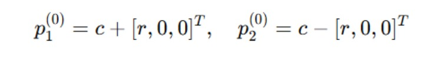
Constraints:
1. Each point must lie on the sphere:
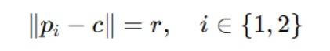2. Distance between points must be within gripper width:
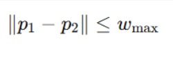5.3 ADMM Iterative Updates
- Make a copy for comparison (z1 and z2) to later make sure they stay on the sphere.
- Begin the loop (try improving the points).
- We run a loop to gradually make the grasp points better.
Update the points:
A balance rule (called a penalty) to keep things fair.
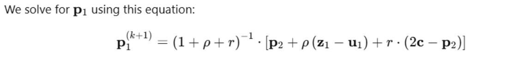
Push them back onto the sphere. Even if we moved them, we force their copies back onto the surface of the sphere.
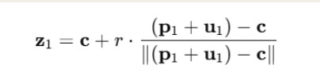
Adjust the penalty (dual) values. We keep track of how much the updated points are drifting from the surface and store that as penalty info (this helps the next round of updates).
- Check if the points are good enough. We stop if:
- The points come within the max_gripper_width.
- They are antipodal.
- If not good, repeat. If they’re still not good enough, go back to step 4 and try again.
- At the end, give back the final grasp points. We return the best positions where the gripper should grab.
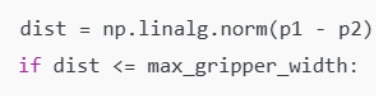
5.4 Force Closure Check
Force closure ensures the grasp can resist any external disturbance.
Force Closure Condition: dot(n1,-n2)>=0.8
This is a stronger antipodal condition, ensuring that:
- The contact normals are almost exactly opposite.
- The object won't rotate or slip under force.
The angle θ between n₁ and -n₂ should be small, i.e.,
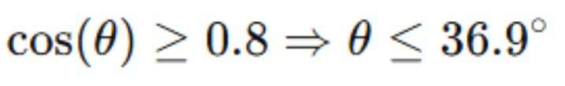
5.5 Inverse Kinematics
- Forward Kinematics Initialization
It begins with an initial guess of joint angles (usually zero or the current configuration).
It calculates the current end-effector position and orientation using forward kinematics.
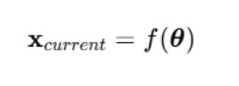
- Compute the Error (Δx)
The solver computes the difference between the current pose and the desired pose:
This includes both:
- Position error (in x, y, z)
- Orientation error (rotation matrix or quaternion difference)
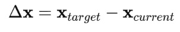
- Compute the Jacobian Matrix (J)
PyBullet computes the Jacobian:
This matrix describes how small changes in joint angles affect the end-effector position/orientation.
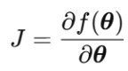
- Solve for Δθ (change in joint angles)
To minimize the pose error, it uses a Damped Least Squares (DLS) approach:
Here, λ is a small damping constant to avoid instability (especially when J is near-singular).
This method is robust and helps in avoiding singularities or unstable behavior.
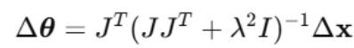
- Update the Joint Angles
New joint configuration:
It repeats the process (usually up to maxNumIterations) until:
- The pose error is below the threshold (residualThreshold)
- Or it reaches the iteration limit
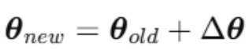
- Return Final Joint Angles
Once converged, the function returns a list of joint values to move the end-effector to your desired pose.
DH-PARAMETER TABLE
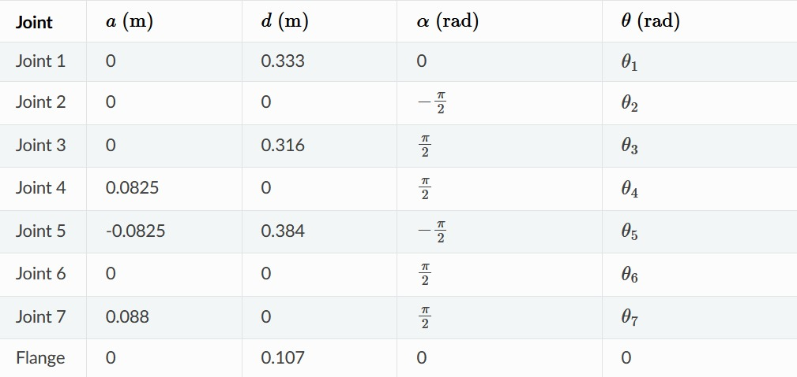Note:
We are using inverse kinematics for both moving the arm to desired position and also to recalculate the joint angles if the robot collides with the tray by adjusting the coordinates.
5.6 PD Control Mechanism and Finite State Machine (FSM)
Smooth Control via PD Mechanism (Proportional Derivative)
Joint motion is driven by a control mechanism that ensures:
- Stability
- Responsiveness
- Smooth convergence to target
PD Control Formula: Robot’s joints are moved in a stable and smooth way
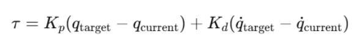Finite State Machine (FSM) — Robot Movement Phases
This is handled mainly in process_result() function. The process variable is the state number of the robot’s current phase.
Here’s the full breakdown:
- process=0: Approach + Grasp
- Move end-effector to the grasp point
- Close the gripper (fingers)
- Once close enough to the object proceed to next state
Goal: Pick the object
- process=1: Move to Drop Point
- Compute a predefined tray/drop position
- Move the robot's End Effector over the drop location
- Keep holding the object
Goal: Go to tray without dropping it
- process=2: Drop
- Lower the End Effector toward the tray
- Once at a low enough height → open the gripper to release
- Proceed to next state
Goal: Drop object into tray gently
- process=3: Lift + Return
- Lift the End Effector back up from the tray
- Return to a safe "neutral" position
Goal: Get ready for next object
- process=4: Done with Current Object
- Reset states
- Ready for the next object in the list
Goal: Iterate to the next pick-place cycle
FSM Execution Flow
Each robot loop:
- Determine the target (based on process)
- Generate action using PD control
- Apply action via PyBullet step
- Check if target reached (via position + velocity thresholds)
- If yes increment process to go to next FSM stage
Results and Discussion
Results
The simulation yielded promising results for grasping a spherical object with center [0.55, 0, 0.1]:
- Grasp Points: ADMM computed
p_1 = [0.523, 0, 0.1],p_2 = [0.577, 0, 0.1], with a distance of 0.054 meters, well within the gripper’s 0.08-meter limit. - Force Closure: The dot product of contact normals was 1.0, indicating perfect antipodal alignment and robust stability.
- FSM Execution: The robot successfully transitioned through all FSM states, grasping the sphere, moving it to the tray, releasing it, and returning to a neutral position.
- Hardware Simulation: Hardware simulation of pick and place was also successfully completed.
Discussion
- The ADMM algorithm efficiently converged to optimal grasp points, demonstrating its suitability for spherical objects.
- Inverse kinematics and PD control ensured precise and smooth movements, with no collisions detected in PyBullet.
- Limitations include the focus on spherical objects, which may not generalize to irregular shapes without further adaptation.
Demo of Simulation and Hardware
Hardware Simulation
This video demonstrates the hardware simulation of the robotic arm grasping spherical objects using the Franka Emika Panda arm in a physical setup.
The hardware simulation showcases the real-world application of the ADMM algorithm, inverse kinematics, and PD control for stable grasping.
Software Simulation
This video illustrates the software simulation of the robotic arm in the PyBullet environment, performing pick-and-place tasks with spherical objects.
The software simulation highlights the integration of the Finite State Machine and collision detection for smooth and precise trajectory execution.
Conclusion
This project successfully demonstrated the optimization of robotic grasping for spherical objects using ADMM, inverse kinematics, and PD control in a PyBullet simulation. The integration of a Finite State Machine ensured structured execution of the pick-and-place task, with results confirming stable and precise grasping. Key achievements include:
- Accurate grasp point identification within the gripper’s constraints.
- Robust force closure for stable grasps.
- Smooth and collision-free trajectory execution.
Future Work
- Future work aims to extend the ADMM algorithm to handle non-spherical objects, such as irregular objects, by adapting surface constraints.
- Additionally, implementing the algorithm on physical hardware to validate real-world performance is a priority.
- Incorporating sensor feedback (e.g., tactile or vision) will enhance grasp reliability, and exploring machine learning techniques will help generalize grasp planning across diverse object geometries.
References
- Boyd, S., Parikh, N., Chu, E., Peleato, B., & Eckstein, J. (2011). Distributed Optimization and Statistical Learning via the Alternating Direction Method of Multipliers. Foundations and Trends in Machine Learning, 3(1), 1–122.
- Chiaverini, S., Siciliano, B., & Egeland, O. (1994). Review of the Damped Least-Squares Inverse Kinematics with Experiments on an Industrial Robot Manipulator. IEEE Transactions on Control Systems Technology, 2(2), 123–134.
- Coumans, E., & Bai, Y. (2016). PyBullet, a Python Module for Physics Simulation for Games, Robotics, and Machine Learning. GitHub Repository.
- Roa, M. A., & Suárez, R. (2009). Computation of Independent Contact Regions for Grasping 3-D Objects. IEEE Transactions on Robotics, 25(4), 839–850.
- Salisbury, J. K., & Roth, B. (1983). Kinematic and Force Analysis of Articulated Mechanical Hands. Journal of Mechanisms, Transmissions, and Automation in Design, 105(1), 35–41.
- Siciliano, B., Sciavicco, L., Villani, L., & Oriolo, G. (2009). Robotics: Modelling, Planning and Control. Springer.